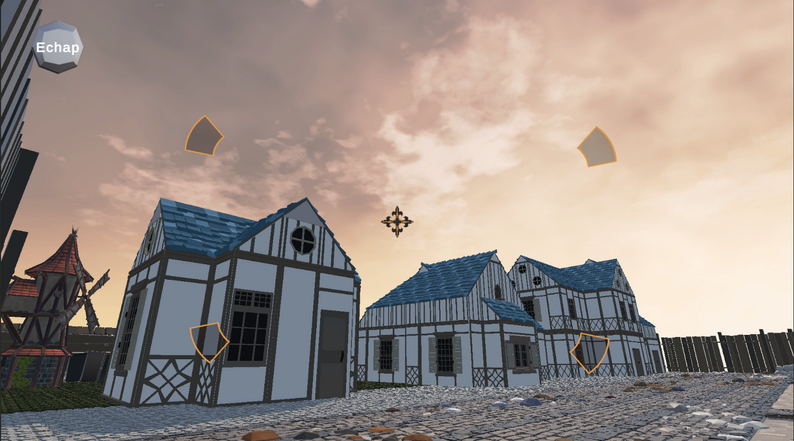
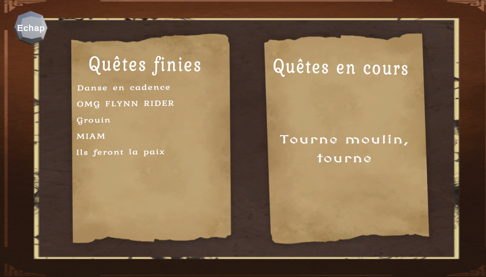
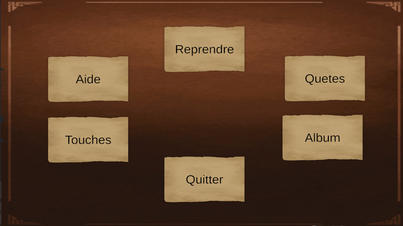
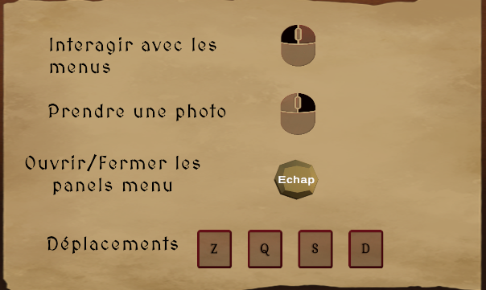

Gameplay
Commandes principales
- Z Q S D : se déplacer
- Souris : orienter la caméra
- Clic droit : prendre une photo
- Clic gauche : interagir avec l’album et les panneaux
- Échap : ouvrir le menu
Projet personnel · Unity · C#
Une aventure photographique dans une ville médiévale vivante, où chaque quête invite à observer la scène et à capturer le bon moment.

Le concept
Le joueur se balade dans le village et réalise une série de quêtes en photographiant des personnages, des animaux ou des éléments précis du décor. La distance et le moment de la prise de vue sont essentiels pour valider chaque objectif.
Le panneau des quêtes permet de suivre la progression et d’obtenir un indice avant de repartir explorer la ville.
Éléments visuels



Gameplay
Ma contribution
À retenir pour la présentation
Find and Flash associe exploration, photographie et narration environnementale. Le joueur doit comprendre la ville, anticiper les comportements des habitants et choisir le bon point de vue pour réussir ses quêtes.